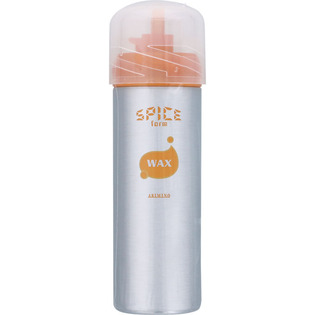

返回列表
产品名称：アリミノ スパイス フォーム ワックス

アリミノ アリミノ スパイス フォーム ワックス １６０Ｇ
メーカー アリミノ
JANコード 4901275061153
商品の特徴
まとまりやすいワックスの質感
- 成分・分量
- 水、PEG-20、PG、DME、LPG、イソステアロイル乳酸Na、ヒドロキシエチルセルロース、（アクリレーツ／アクリル酸ラウリル／アクリル酸ステアリル／メタクリル酸エチルアミンオキシド）コポリマー、ステアルトリモニウムクロリド、ラウラミンオキシド、エタノール、乳酸、TEA、フェノキシエタノール、ブチルパラベン、メチルパラベン、香料
- 用法及び用量
- ＜使用方法＞
○ご使用前に缶を上下によく振ってから、ノズルを下に向けて使用します。上向きや水平で使用すると中身が残り、最後まで使用できないことがあります。
※適量を手に取り髪全体に塗布して整えます。
○キャップの取扱い方法
・キャップを取らずに反時計回りに90度カチッと音が鳴るまで回し、中央のノズルを出してからボタンを押します。
・使い終わったら、キャップを時計回りに回して元に戻します。